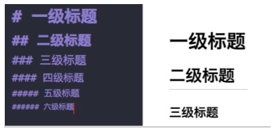
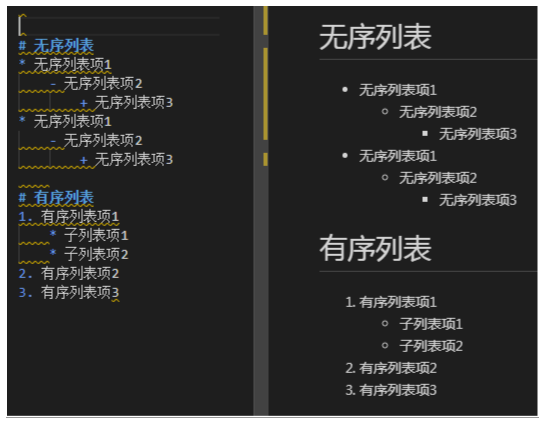
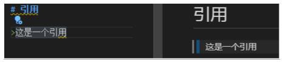
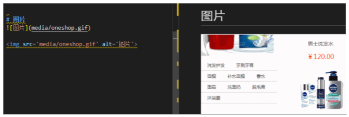
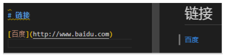
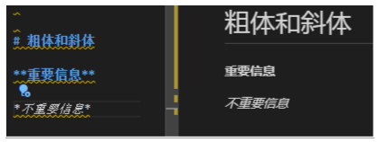
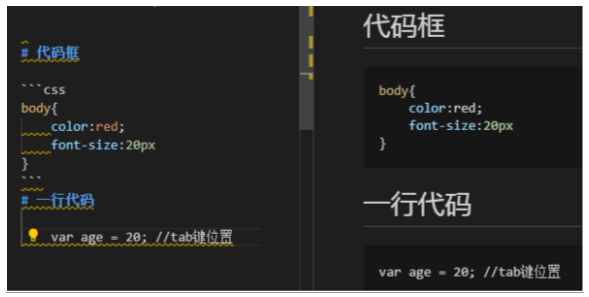
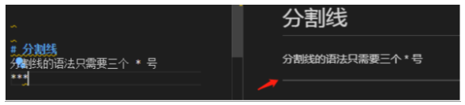

markdown使用教程¶
1.markdown介绍¶
Markdown是一种可以使用普通文本编辑器编写的标记语言，通过简单的标记语法，它可以使普通文本内容具有一定的格式。它允许人们使用易读易写的纯文本格式编写文档，然后转换成格式丰富的HTML页面，Markdown文件的后缀名便是“.md”
Markdown 是一种用来写作的轻量级「标记语言」，它用简洁的语法代替排版
2.markdown优势¶
- 专注你的文字内容而不是排版样式，安心写作。
- 轻松的导出 HTML、PDF 和本身的 .md 文件。
- 纯文本内容，兼容所有的文本编辑器与字处理软件。
- 随时修改你的文章版本，不必像字处理软件生成若干文件版本导致混乱。
- 可读、直观、学习成本低。
3.工具¶
- MarkdownPad
- MarkPad
- Typora
- Typora中文网
4.语法¶
4.1标题¶

标题
标题是每篇文章都需要也是最常用的格式，在 Markdown 中，如果一段文字被定义为标题，只要在这段文字前加 # 号即可。
# 一级标题
## 二级标题
### 三级标题
以此类推，总共六级标题，建议在井号后加一个空格，这是最标准的 Markdown 语法。
4.2列表¶
熟悉 HTML 的同学肯定知道有序列表与无序列表的区别，在 Markdown 下，列表的显示只需要在文字前加上 - 或 * 即可变为无序列表，有序列表则直接在文字前加1. 2. 3. 符号要和文字之间加上一个字符的空格。

4.3引用¶
如果你需要引用一小段别处的句子，那么就要用引用的格式。
例如这样
只需要在文本前加入 > 这种尖括号（大于号）即可

4.4图片与链接¶
插入链接与插入图片的语法很像，区别在一个 !号
图片为：

链接为：[]()
插入图片的地址需要图床，这里推荐围脖图床修复计划 与 CloudApp 的服务，生成URL地址即可。

4.5粗体与斜体¶
Markdown 的粗体和斜体也非常简单，用两个 * 包含一段文本就是粗体的语法，用一个 * 包含一段文本就是斜体的语法。
例如：这里是粗体 这里是斜体

4.6表格¶
表格是我觉得 Markdown 比较累人的地方，例子如下：
| Tables | Are | Cool |
| ------------- |:-------------:| -----:|
| col 3 is | right-aligned | $1600 |
| col 2 is | centered | $12 |
| zebra stripes | are neat | $1 |
这种语法生成的表格如下：
| Tables | Are | Cool |
|---|---|---|
| col 3 is | right-aligned | $1600 |
| col 2 is | centered | $12 |
| zebra stripes | are neat | $1 |
4.7代码框¶
如果你是个程序猿，需要在文章里优雅的引用代码框，在 Markdown下实现也非常简单，只需要用两个 ` 把中间的代码包裹起来。图例：

使用 tab 键即可缩进。
4.8分割线¶
分割线的语法只需要三个 * 号，例如：
